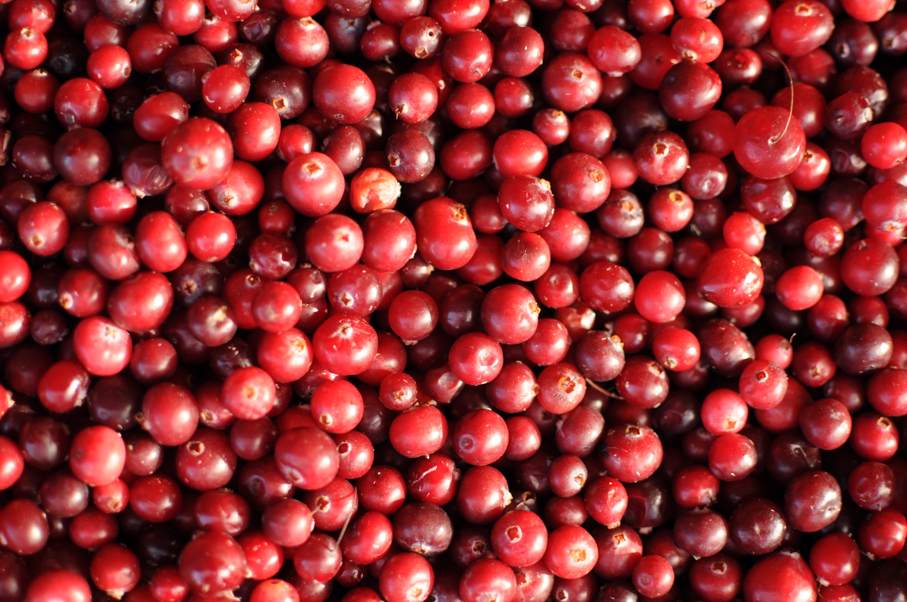

Cranberry

Cranberries are nutrient-rich berries known for their tart flavor. They are a great source of vitamin C and contain a variety of antioxidants, including proanthocyanidins (PACs), which are beneficial compounds that support urinary tract health. Cranberries are also rich in fiber, low in calories, and have a high water content. Including cranberries in your diet, whether fresh or dried, can provide you with essential nutrients, antioxidants, and potential urinary tract benefits. Opt for unsweetened cranberry products to avoid added sugars and maximize the health benefits.